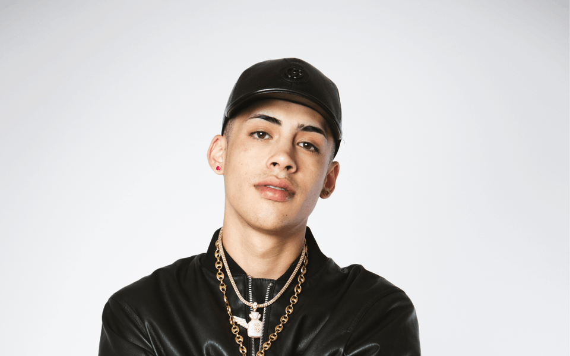

Cris Mj
Born: 16 September 2001
Age:
Years Active: 2019–present
Genre/s: Reggaeton
Label/s: Stars Chile, Rimas
Christopher Andrés Álvarez García (born 16 September 2001), known professionally as Cris MJ, is a Chilean rapper, singer and songwriter. He gained international fame for his hit single "Una Noche en Medellín" (2022) and its eventual remix (2023) featuring Colombian singers Karol G and Ryan Castro, which peaked at number 68 on the Billboard Hot 100.
Álvarez later collaborated with Standly on "Marisola" in July 2022, with a remix with Argentine artists Duki and Nicki Nicole being released months later, which also had considerable success. In 2024, he again rose to worldwide fame after collaborating with FloyyMenor on "Gata Only", which achieved success within song charts globally. Following the song's success, Álvarez would release "Si No Es Contigo" in May 2024, which also attained virality in the United States.
He began his musical career in 2020 as Cris MJ, which is named after his first name and his father's friend group, who were called "Mala Junta". He began independently releasing several singles and collaborations with other artists within the Chilean urbano scene, later announcing that he would release his debut studio album in 2021, releasing more singles, including "Locura y Maldad" ('madness and evil') and "Los Malvekes".
In January 2022, he released the single "Una Noche en Medellín" ('A Night In Medellín'), which went viral on the social platform TikTok and appeared on international music charts. In February 2022, he performed at the Summer Fest 2022, later embarking his first tour, with dates in Mexico and Colombia, among other countries.
After this early success, Cris MJ would be featured in other collaborations, including "Yo No Me Olvido" ('I don't forget') with Gotay, "Sextime" with Polimá Westcoast and Young Cister and "Me Arrepentí" ('I regretted it') with Ak4:20 y Pailita, and soon was the most-streamed Chilean artist on Spotify.
On 2 February 2024, he collaborated with FloyyMenor on the single "Gata Only", after Cris MJ reached out to the artist, proposing that he should contribute to the song. The single appeared on international song charts, including the US Billboard Hot 100 at number 27.